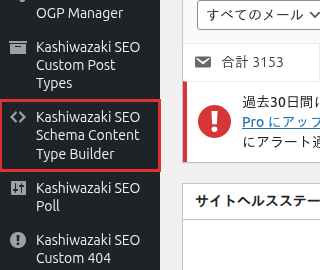

インストール・初期設定
Kashiwazaki SEO Schema Content Type Builder のインストール方法と、構造化データ出力に必要な基本設定を説明します。
インストール手順
1
WordPress管理画面から プラグイン > 新規追加 に移動し、「Kashiwazaki SEO Schema Content Type Builder」を検索します。または、プラグインのZIPファイルを プラグイン > 新規追加 > プラグインのアップロード からアップロードします。
2
「今すぐインストール」をクリックし、インストール完了後「有効化」をクリックします。
3
管理画面の左メニューに「Kashiwazaki SEO Schema Content Type Builder」が追加されます。クリックして設定画面を開きます。

ヒント
有効化直後から、デフォルト設定で構造化データが自動出力されます。必要に応じて投稿タイプごとのスキーマ設定を調整してください。
管理画面の構成
設定画面は1ページ・5タブ構成になっており、すべての設定を一画面で管理できます。
| タブ名 | 内容 |
|---|---|
| 基本設定 | プラグイン全体のON/OFF、デフォルトスキーマタイプの設定 |
| 投稿タイプ設定 | 投稿タイプごとのスキーマタイプと出力内容の個別設定 |
| BreadcrumbList | パンくずリスト構造化データの出力設定 |
| アーカイブ設定 | アーカイブページ向けスキーマの設定 |
| プレビュー | 現在の設定で出力されるJSON-LDのプレビュー確認 |
基本設定
デフォルトスキーマタイプ
投稿タイプ別の個別設定が行われていない場合に適用されるデフォルトのスキーマタイプを選択します。
| スキーマタイプ | 説明 |
|---|---|
| Article | 一般的な記事コンテンツ。最も汎用的なスキーマタイプです。 |
| NewsArticle | ニュース記事。Google Newsへの掲載を目指す場合に適しています。 |
| BlogPosting | ブログ記事。個人ブログや企業ブログの投稿に最適です。 |
| WebPage | 一般的なWebページ。固定ページや情報ページに適しています。 |
補足
デフォルトでは投稿（post）にArticle、固定ページ（page）にWebPageが割り当てられます。投稿タイプ設定タブで個別にカスタマイズ可能です。
出力されるJSON-LDの例
Articleスキーマの出力例:
{
"@context": "https://schema.org",
"@type": "Article",
"headline": "記事タイトル",
"author": {
"@type": "Person",
"name": "著者名"
},
"datePublished": "2025-01-01T00:00:00+09:00",
"dateModified": "2025-01-02T00:00:00+09:00",
"publisher": {
"@type": "Organization",
"name": "サイト名"
}
}ヒント
JSON-LDの出力は Googleリッチリザルトテスト で確認できます。